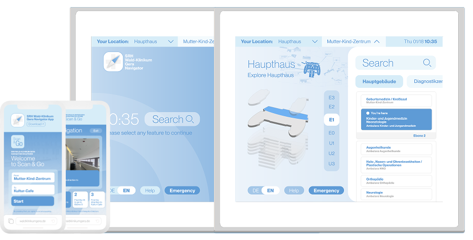
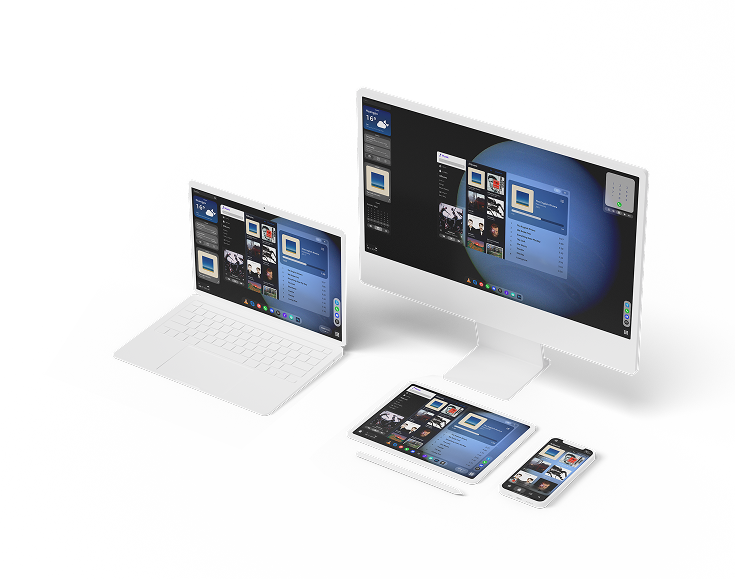
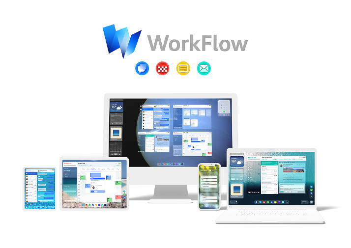
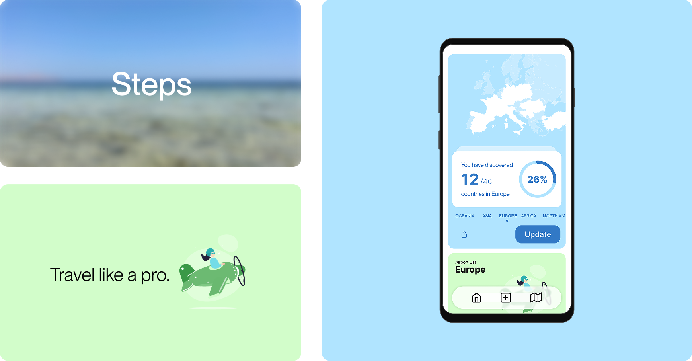
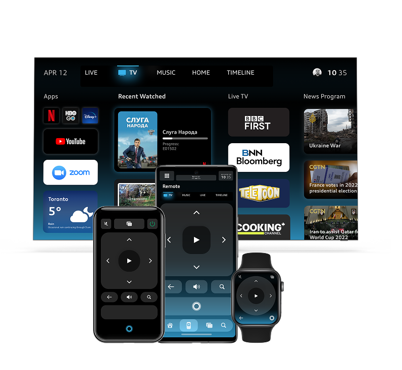
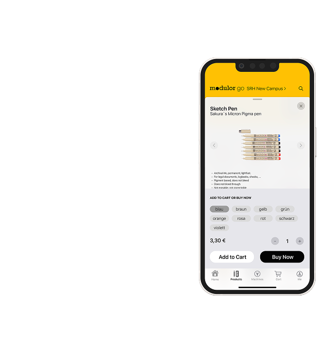
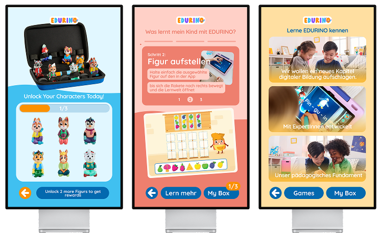
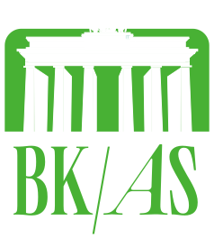
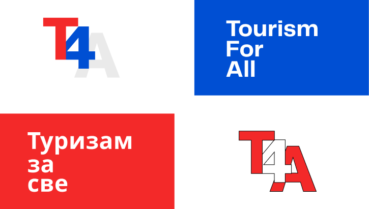

作品
ZeitGuard — 帮助学生克服拖延症

SRH Wald-Klinikum Gera 医院导视系统

Timeline OS 操作系统设计

WorkFlow 办公套件

ZeitGuard 时间管理应用

Steps 旅行记录与规划应用

Timeline OS 电视操作系统

modulor 自动售货应用

Edurino 零售 POS 系统设计
Muscat Metro 马斯喀特地铁概念设计
Background Image: © Ahmed Al Toqi



我们的柏林艺术季

xArch Symposium
weico

Tourism For All
这个分类下暂时没有作品。